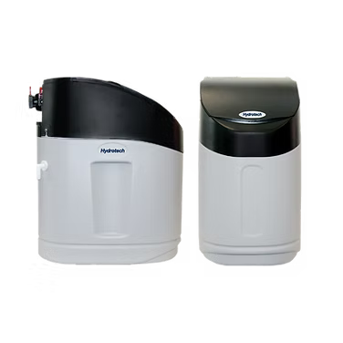
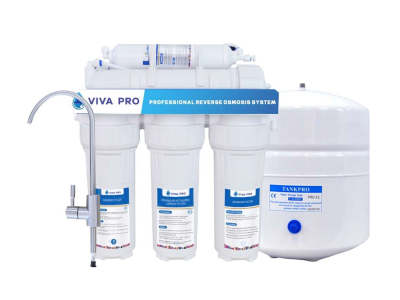
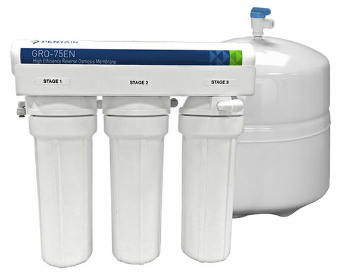

Residential
RESIDENTIAL WATER PURIFICATION SYSTEMS
We offer a range of water solutions for residential properties. Choose the category to see relevant products:
City Water Purification Systems
Installed at the main water line for clean and safe water across the entire home.
Learn MoreWell Water Purification Systems
Installed after the well bladder system for purified water throughout the house.
Learn MoreDrinking Water Systems For Kitchen
Installed under the kitchen sink for the best quality drinking water.
Learn MoreCITY WATER PURIFICATION SYSTEMS FOR WHOLE HOUSE


Total Home Solution
Includes HT89 HTO, RO System, UV Light, and Whole Home Sediment Filter

WELL WATER PURIFICATION SYSTEMS FOR WHOLE HOUSE



VIVA Pro : 6 Stage System
75 GPD - RO System with Alkaline filter. Tank, faucet, and filters included.
Learn More
HT565 Softener
A high‑efficiency, demand‑driven water softener engineered for smarter regeneration, lower salt use, and consistently soft water.
- Precision Brining Technology: Calculates the exact brine needed for regeneration, reducing salt use by up to 30%.
- Demand-Initiated Regeneration (DIR): Automatically regenerates based on actual water usage, improving efficiency and extending resin life.
- Soft Water Recharge Mode: Provides a quick recharge if usage exceeds expected demand, ensuring continuous soft water.
- System Refresh Cycle: Performs a 10-minute backwash after 7 days of inactivity to prevent stagnant water and bacterial growth.
- Internal Automatic Bypass: Supplies untreated water to the home during regeneration so you’re never without water.
- Water Hardness Removal: Removes calcium and magnesium through ion exchange, replacing them with sodium ions.
HT565 HTO Softener
A dual‑tank carbon + softening system engineered for superior chlorine/chloramine removal, high‑efficiency softening, and long‑lasting performance
- Replaceable Carbon Bed: Carbon can be replaced independently without disturbing the resin bed — lowering long‑term maintenance costs.
- One Valve, Dual‑System Performance: Achieves the benefits of two separate systems while using only one control valve.
- Salt‑Efficient Upflow Regeneration: Reduces salt consumption while maintaining high softening performance.
- NSF‑Certified Electronic Control Valve: Features proven piston, seal, and spacer technology with a seven‑year warranty.
- Fully Adjustable Regeneration Cycles: Allows fine‑tuning for specific water quality conditions to maximize efficiency.
- Built‑In Safety & Reliability Features: Brine safety valve, salt‑grid system to prevent bridging, and precision turbine meter integrated into the bypass to save floor space.
Total Home Solution
- Complete Whole‑Home Protection: Softens water, removes chlorine/chloramines, filters problem contaminants, and disinfects microbiological threats — delivering clean, safe, refined water to every tap.
- Dual‑Tank Refining Technology: Separate carbon and resin beds maximize chlorine/chloramine removal and allow carbon replacement without disturbing the softener resin.
- High‑Efficiency Upflow Softening: Upflow regeneration saves salt, reduces waste, and preserves unused resin for longer system life.
- Advanced UV Disinfection: Chemical‑free protection against bacteria, viruses, E.coli, Giardia, and Cryptosporidium using stainless‑steel, ASME‑rated UV chambers.
- Smart, User‑Friendly Controls: Large LCD displays with diagnostics, flow monitoring, regeneration history, lamp‑life countdowns, and optional sensor upgrades.
- Water‑Saving Reverse Osmosis: High‑recovery Pentair membrane delivers premium drinking water with up to 4× less wastewater than conventional RO systems.
- Durable, Certified Components: NSF‑certified tanks, long‑life UV lamps, precision turbine meters, and quick‑connect fittings for reliable performance and easy installation.
- Cleaner Water, Cleaner Home: Enjoy softer skin, spot‑free dishes, brighter laundry, odor‑free water, and extended appliance life — all from one integrated solution.
Iron Filter - BIF & BAF
A powerful, chemical‑free iron filtration system that uses natural oxidation and smart digital controls to deliver clean, clear, iron‑free water throughout your home.
- Chemical-Free Iron, Manganese & Sulphur Removal: Natural oxidation process eliminates contaminants without chemicals, air pumps, or venturi systems.
- Efficient Two-Tank Design: Dedicated air contact tank + media tank improves oxidation, extends media life, and reduces maintenance.
- Up to 50% Less Water Use: Regenerates less frequently than traditional single-tank iron filters, saving water and operating cost.
- NSF-Certified Electronic Control Valves: Available with Hydrotech 89 or 565 valves featuring adjustable cycles, multiple metering modes, and backlit displays.
- Durable, Long-Life Construction: NSF-certified fiberglass tanks with lifetime warranty and a 7-year warranty on the control valve.
- Smart Metering & Diagnostics: Meter-immediate, meter-delayed, day-override, vacation mode, and rotating “no-touch” system information.
- Space-Saving Bypass with Integrated Turbine Meter: One-piece design prevents meter jamming and includes a sample port for easy testing.
- Fast, Clean Installation: Quick-connect fittings on bypass, drain line, brine line, and power cord — plus included drain tubing and clamp.
Iron Filter - AIO
A powerful single‑tank air‑induction system that removes iron, manganese, and hydrogen sulfide without chemicals, pumps, or venturi systems.
- Chemical-Free Air Induction Oxidation: Creates an air bubble inside the tank to naturally oxidize iron, manganese, and low-level hydrogen sulfide before filtration.
- Single-Tank, Low-Maintenance Design: No chemicals, no messy additives, no external air pumps — just clean, efficient oxidation and filtration.
- pH-Boosting Media for Enhanced Iron Removal: Special media increases pH and traps iron precipitate for more effective filtration.
- Automatic Regeneration: Replenishes oxygen and backwashes the media to remove accumulated iron, keeping performance consistent.
- Integrated Inlet Check Valve: Prevents air from escaping backward through plumbing, ensuring stable oxidation.
- High Flow Capacity: Models available from 0.75 to 3.0 cu. ft. with peak flow rates up to 14 gpm.
- Durable, Certified Construction: NSF-certified tanks, optional tank jackets, and long warranties (5–7 years depending on valve).